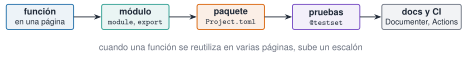

Mientras una función vive en una página, solo la usa esa página. En cuanto se reutiliza, hay que subirla un escalón: a un módulo (un espacio de nombres propio), después a un paquete (con su Project.toml) y, si importa, con pruebas, documentación e integración continua. Es lo que se hizo con Resonancia.jl, y es la regla del curso: toda función reutilizable va al paquete con docstring y test. En esta unidad se crea un paquete mínimo de verdad, con sus pruebas, y se ve cómo falla cuando algo está mal declarado.
NotaCómo se lee esta unidad
Tiempo orientativo: 60 minutos. Objetivos (3), teoría en cuatro píldoras (12), práctica guiada (25), «Pídeselo a Claude» (8), ejercicios (10) y cierre (2). El paquete de la práctica se crea en una carpeta temporal: no modifica el entorno del curso ni el repositorio.
Objetivos y prerrequisitos
Objetivos. Al terminar esta unidad sabrás:
definir un módulo, exportar su API y distinguir lo público de lo interno;
reconocer la estructura de un paquete (Project.toml, src/, test/) y leer su [compat];
escribir pruebas con @testset, @test, ≈, @test_throws y @inferred;
crear un paquete mínimo y ejecutar sus pruebas con Pkg.test;
explicar qué aportan la documentación con Documenter.jl y la integración continua.
Prerrequisitos. El curso no los impone en el temario; conviene J1.2 (entorno y Resonancia.jl), J1.4 (funciones y docstrings) y J1.8 (tipos y métodos).
Reparto con otras unidades. Esta unidad explica el mecanismo. La política de qué entra en Resonancia.jl está en CLAUDE.md (función reutilizable, con docstring y test) y el control de versiones, en C3.
Teoría breve
NotaUn poco de historia: dónde se declaran las dependencias de test
La forma de declarar qué paquetes necesitan las pruebas ha ido cambiando. La más antigua usa las secciones [extras] y [targets] del Project.toml del paquete; desde Julia 1.2, Pkg admite además un test/Project.toml propio, y la documentación actual de Pkg recomienda, desde Julia 1.12, los workspaces (un [workspace] en el Project.toml principal que enlaza con test/) (Creating Packages 2026). Los tres métodos siguen funcionando. En esta unidad se usa el más antiguo, [extras] y [targets], porque es el que entienden todas las versiones, incluida la LTS 1.10 con la que se comprueba el curso.
Fuente: documentación de Pkg, Creating Packages(Creating Packages 2026). Consultada el 26-10-2026.
J3.2.1 Módulos y espacios de nombres
Un módulo agrupa definiciones bajo un nombre: lo que se define dentro no choca con lo de fuera. Con export se marca la API pública (lo que using trae al espacio de trabajo); lo demás sigue accesible, pero cualificado (Modulo.funcion), y se entiende como interno:
Ver el código
module EstadisticosusingStatisticsexport rms, pico""" rms(x) -> Float64Valor eficaz de `x`, en las unidades de `x`."""rms(x::AbstractVector{<:Real}) =sqrt(mean(abs2, x))""" pico(x) -> Float64Máximo del valor absoluto de `x`."""pico(x::AbstractVector{<:Real}) =maximum(abs, x)_ayuda(x) = x .-mean(x) # interno: no se exportaendusing.Estadisticos# el punto: el módulo está en este fichero, no es un paqueteinterno =try_ayuda([1.0, 2.0]) catche; sprint(showerror, e); end(exportados =sort(names(Estadisticos)), rms_de_3_4 =rms([3.0, 4.0]), interno_sin_cualificar = interno, interno_cualificado = Estadisticos._ayuda([1.0, 2.0, 3.0]))
(exportados = [:Estadisticos, :pico, :rms], rms_de_3_4 = 3.5355339059327378, interno_sin_cualificar = "UndefVarError: `_ayuda` not defined in `Main.Notebook`\nSuggestion: check for spelling errors or missing imports.", interno_cualificado = [-1.0, 0.0, 1.0])
Dos formas de traer un módulo: using M trae sus nombres exportados; import M solo trae M, y entonces se escribe M.f. Cuando el módulo está en un fichero del propio proyecto se carga con include("M.jl") y se usa con un punto: using .M.
Lo que no se exporta de un módulo es inaccesible desde fuera.
Falso. Se puede acceder cualificándolo (Modulo._ayuda(x)). export solo decide qué trae using; la convención es que lo no exportado es interno y puede cambiar sin aviso.
J3.2.2 Anatomía de un paquete
Un paquete es un módulo con la estructura que Pkg entiende: un Project.toml con name, uuid y version, y una carpeta src/ con un fichero NombreDelPaquete.jl que define el módulo; las pruebas van en test/runtests.jl(Creating Packages 2026). Así es Resonancia.jl, el paquete de este curso, que se puede inspeccionar por código:
Tres detalles: (1) uuid identifica el paquete de forma única, aunque dos se llamen igual; (2) [deps] lista todo lo que el código carga con using, incluidas las bibliotecas estándar como LinearAlgebra; (3) [compat] indica con qué versiones de Julia y de las dependencias se garantiza que funciona (aquí, julia = "1.10") (Creating Packages 2026).
J3.2.3 Pruebas con Test
Una prueba es una afirmación sobre el código que se comprueba automáticamente. @test expr comprueba que expr sea cierta; @testset "nombre" begin … end agrupa pruebas, las ejecuta todas aunque alguna falle y resume los resultados; @test_throws comprueba que se lance una excepción; @inferred comprueba que el tipo del resultado se pueda deducir (estabilidad de tipos, J3.1). Con reales se usa ≈, que admite atol y rtol(Unit Testing (stdlib Test) 2026):
Ver el código
@testset"Estadisticos"begin@testrms([3.0, 4.0]) ≈sqrt(12.5) # valor calculado a mano@testpico([1.0, -3.0, 2.0]) ==3.0@testrms(fill(2.0, 100)) ≈2.0# propiedad: RMS de una constante@testrms(-[3.0, 4.0]) ≈rms([3.0, 4.0]) # propiedad: invariante al signo@test_throwsMethodErrorrms("hola") # entrada no válida@test (@inferredrms([1.0, 2.0])) isa Float64# tipo estableend;
Test Summary: | Pass Total Time
Estadisticos | 6 6 0.0s
Una buena batería mezcla valores conocidos (calculados a mano), propiedades (invariancias que siempre deben cumplirse) y casos límite o inválidos. Escribir la prueba antes de usar la función por primera vez obliga a pensar qué debe devolver.
Propón tres pruebas para una función media_movil(x, k) que calcula la media móvil de ventana k.
Un valor conocido (por ejemplo, la media móvil de [1, 2, 3, 4] con k = 2 es [1,5; 2,5; 3,5]).
Una propiedad (por ejemplo, para k = 1 devuelve la propia señal; para una constante, devuelve esa constante).
Un caso inválido (k mayor que la longitud, o k ≤ 0, debe lanzar un error).
J3.2.4 Documentación e integración continua
Una función sin documentar no es reutilizable: de ahí los docstrings con firma, descripción, unidades y ejemplo (J1.4). Documenter.jl convierte esos docstrings y unos ficheros Markdown en un sitio web, y puede probar como pruebas (doctests) los ejemplos que aparecen en la documentación, de modo que un ejemplo que se desactualiza falla (Documenter.jl 2026). Una documentación mínima vive en docs/ con un docs/src/index.md y un docs/make.jl que llama a makedocs.
La integración continua (CI) ejecuta las pruebas automáticamente en un servidor cada vez que se sube código, de modo que un cambio que rompe algo se detecta enseguida y no semanas después. En este repositorio, la publicación web es un flujo de trabajo de GitHub Actions que se lanza con cada push a main (.github/workflows/publish.yml). Una de sus decisiones es instructiva: no instala Julia, y lee los resultados de las páginas con código de la carpeta _freeze/, por lo que hay que renderizarlas en local y commitear _freeze/ antes de subir.

Figura 1: Del código suelto al paquete probado: cada escalón añade garantías, y se sube de uno en uno cuando el código se reutiliza.
NotaIdea clave
Un paquete sin pruebas es una promesa; con pruebas, es un contrato. Y una función de Resonancia.jltiene pruebas porque otras páginas del curso se apoyan en ella: si cambia, hay que saberlo ya.
AdvertenciaErrores frecuentes
Usar un paquete sin declararlo en [deps]: aunque sea de la biblioteca estándar, como Statistics; el paquete falla al cargarse (se muestra en la práctica). (2) Exportar demasiado: cada nombre exportado puede chocar con los del usuario; se exporta solo la API. (3) @test a == b con reales en vez de ≈: falla por redondeo. (4) Pruebas que escriben ficheros dentro de la carpeta del paquete: las pruebas no deben modificarla (Creating Packages 2026). (5) No declarar [compat]: el paquete puede romperse al actualizar una dependencia. (6) Editar [deps] a mano y dejar un Manifest.toml antiguo: Pkg falla con un mensaje confuso; se usa Pkg.add o se regenera el manifiesto.
Documenter.jl(Documenter.jl 2026); para generar la plantilla de un paquete completo (con docs y CI), la documentación de Pkg recomienda PkgTemplates.jl.
Reglas del curso: CLAUDE.md (apartado «Código y entornos»).
Vamos a crear un paquete Descriptores completo, a ejecutar sus pruebas con Pkg.test y a ver qué pasa si una dependencia no está declarada. Todo en una carpeta temporal.
Paso 1. Crear la estructura y los ficheros.
Ver el código
dir =mktempdir()pkg =joinpath(dir, "Descriptores")mkpath(joinpath(pkg, "src")); mkpath(joinpath(pkg, "test"))proyecto(deps) ="""name = "Descriptores"uuid = "5f3a1c8e-8b0e-4d5e-9d57-2d9d4a6c9a11"version = "0.1.0"$(deps)[compat]julia = "1.10"[extras]Test = "8dfed614-e22c-5e08-85e1-65c5234f0b40"[targets]test = ["Test"]"""declara_statistics ="\n[deps]\nStatistics = \"10745b16-79ce-11e8-11f9-7d13ad32a3b2\"\n"write(joinpath(pkg, "src", "Descriptores.jl"), """module Descriptoresusing Statisticsexport rms, pico\"\"\" rms(x) -> Float64Valor eficaz de `x`, en las unidades de `x`.\"\"\"rms(x::AbstractVector{<:Real}) = sqrt(mean(abs2, x))\"\"\" pico(x) -> Float64Máximo del valor absoluto de `x`.\"\"\"pico(x::AbstractVector{<:Real}) = maximum(abs, x)end""")write(joinpath(pkg, "test", "runtests.jl"), """using Test, Descriptores@testset "Descriptores" begin @test rms([3.0, 4.0]) ≈ sqrt(12.5) @test pico([1.0, -3.0, 2.0]) == 3.0 @test_throws MethodError rms("hola") @test (@inferred rms([1.0, 2.0])) isa Float64end""")sort(relpath.(vcat([joinpath(r, f) for (r, _, fs) inwalkdir(pkg) for f in fs]), pkg))
(las_pruebas_pasan = false, mensaje = SubString{String}["ERROR: The following 1 direct dependency failed to precompile:", "ERROR: LoadError: ArgumentError: Package Descriptores does not have Statistics in its dependencies:"])
El paquete ni siquiera se carga: falta declarar la dependencia, que Pkg exige para todo lo que se carga con using (hasta para una biblioteca estándar).
Paso 3. Declarar y volver a probar. Editar [deps] a mano deja desactualizado el Manifest.toml que Pkg creó en el primer intento; lo normal sería Pkg.add("Statistics"), que lo actualiza solo. Aquí se simula la edición manual y se borra el manifiesto para que se regenere.
Cuatro pruebas, cuatro aciertos. Es el mismo mecanismo con el que se prueba Resonancia.jl: desde la raíz del repositorio, julia --project=. -e 'using Pkg; Pkg.test("Resonancia")' ejecuta sus pruebas (20 conjuntos @testset).
Paso 4. Qué pasa cuando una prueba falla. Se cambia una afirmación a una incorrecta y se comprueba que el resumen lo dice con claridad:
Una prueba que falla es información valiosa: señala exactamente qué comportamiento ha cambiado. Por eso el paquete no se da por bueno hasta que todas pasan.
«Pídeselo a Claude»
TipPrompt
«Con Julia y sin modificar el entorno del repositorio, crea en una carpeta temporal un paquete Descriptores con Project.toml (name, uuid, version, [deps] con Statistics, [compat] julia = "1.10"), src/Descriptores.jl (funciones rms y pico con docstring y unidades) y test/runtests.jl con cuatro pruebas: un valor calculado a mano, una propiedad, un @test_throws y un @inferred. Ejecuta Pkg.test() en ese paquete y dime el resumen. No uses Pkg.add ni toques Project.toml ni Manifest.toml de la raíz. No inventes resultados: si algo falla, dime el mensaje.»
Verifica. (a) Que el paquete está fuera del repositorio (carpeta temporal) y que git status no muestra cambios en la raíz. (b) Que Statistics está declarada en [deps] con su UUID. (c) Que usa ≈ y no == para los reales. (d) Que el resumen dice Pass 4 Total 4. (e) Que los docstrings llevan firma y unidades.
Ejercicios
¿Cuántos @testset tiene Resonancia.jl/test/runtests.jl?
20 (el valor testsets del paso de anatomía; puede crecer si se añaden pruebas).
Para cargar Statistics con using dentro de un paquete hay que declararla en [deps], aunque pertenezca a la biblioteca estándar.
Verdadero. Pkg exige declarar todo lo que el código carga, y de ahí el error del paso 2 de la práctica.
En una prueba, @test rms(x) == 0.7615773105863908 es preferible a @test rms(x) ≈ 0.7615773105863908, porque es más estricta.
Falso. Con reales, la igualdad exacta falla por diferencias de redondeo entre máquinas y versiones; ≈ comprueba con tolerancia relativa.
Tienes una función descriptores en la página J1.4 y la quieres usar también en dos unidades de M. ¿Qué pasos das según las reglas del curso?
La mueves a Resonancia.jl con docstring (con unidades) y un test, y no copias el código entre páginas.
Las páginas la cargan con using Resonancia; si cambia la versión del paquete, se vuelve a renderizar lo que dependa de ella.
La doy por superada si…
Defino un módulo y distingo la API exportada de lo interno.
Reconozco la estructura de un paquete y leo su [deps] y su [compat].
Escribo una batería con valores conocidos, propiedades y casos inválidos.
Creo un paquete mínimo, declaro sus dependencias y ejecuto Pkg.test.
Explico qué aportan la documentación y la integración continua.
Cierre. Escribe tres líneas: qué he entendido, qué todavía no domino y cuál es mi siguiente paso pequeño. Una función que otras páginas usan sin pruebas es un riesgo: antes de moverla al paquete, escribe su test.
Son las mismas que aparecen en el margen, junto al texto. La lista completa del curso, con el estado de verificación de cada ficha, está en recursos/bibliografia.bib del repositorio.